Mostrar o que aconteceu
Uma sequência de fatos, do começo ao fim, que documenta o evento.
Layon Films Storymaker
Cada detalhe merece ser vivido, sentido e lembrado. Transformamos momentos especiais em histórias que continuam emocionando.
Sobre mim
Sou Layon Duarte, o olhar por trás da Layon Films. Meu trabalho é transformar momentos únicos em conteúdos autênticos, emocionantes e de altíssima qualidade.
Com uma abordagem moderna e discreta, acompanho o seu evento de forma natural e cinematográfica. Estou presente sem interromper, atento aos olhares, aos gestos e aos pequenos instantes que tornam o dia inesquecível, para que você possa reviver cada emoção sempre que quiser.
Do primeiro bastidor ao último brinde.
O serviço
Storymaker é a cobertura audiovisual pensada para o ritmo de hoje. Em vez de apenas registrar o que aconteceu, eu conto como foi viver aquele dia, com vídeos curtos, verticais e cheios de emoção, prontos para assistir, compartilhar e revisitar sempre que a saudade bater.
Uma sequência de fatos, do começo ao fim, que documenta o evento.
O nervosismo antes da entrada, o olhar no altar, o abraço que ninguém planejou. A atmosfera do dia, guardada em poucos segundos.
Momentos verdadeiros, registrados com naturalidade e sem poses forçadas.
A preparação, os detalhes e os instantes que quase ninguém vê.
Conteúdo vertical, no formato ideal para publicar e compartilhar.
Narrativas dinâmicas que prendem a atenção do começo ao fim.
Prazos ágeis, de acordo com o pacote contratado.
Compartilhe a experiência enquanto todos ainda estão envolvidos por ela.
Soma ao trabalho de fotografia e filmagem tradicionais, com uma linguagem própria e atual.
Um vídeo curto cabe na rotina. Ele pode ser assistido em segundos, enviado para quem não pôde estar presente e revisitado sempre que você quiser sentir tudo de novo.
Portfólio audiovisual
Trabalhos reais, captados em casamentos e editados no formato vertical, do jeito que você vai assistir no celular. Toque em um filme para assistir com som.
Galeria
Fotografias reais de casamentos acompanhados de perto. Toque em qualquer imagem para ampliar.
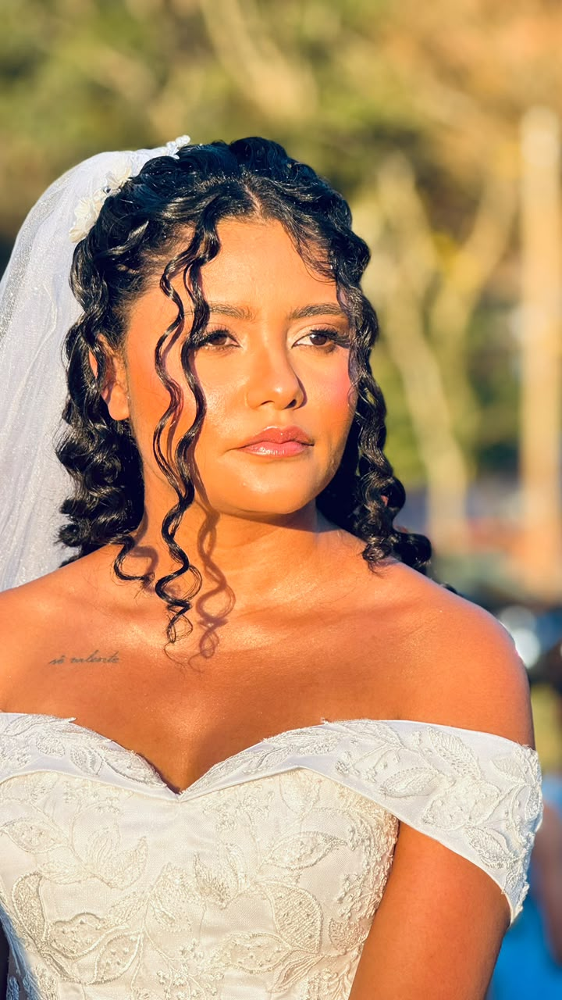
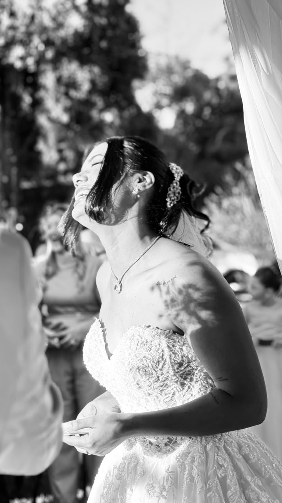
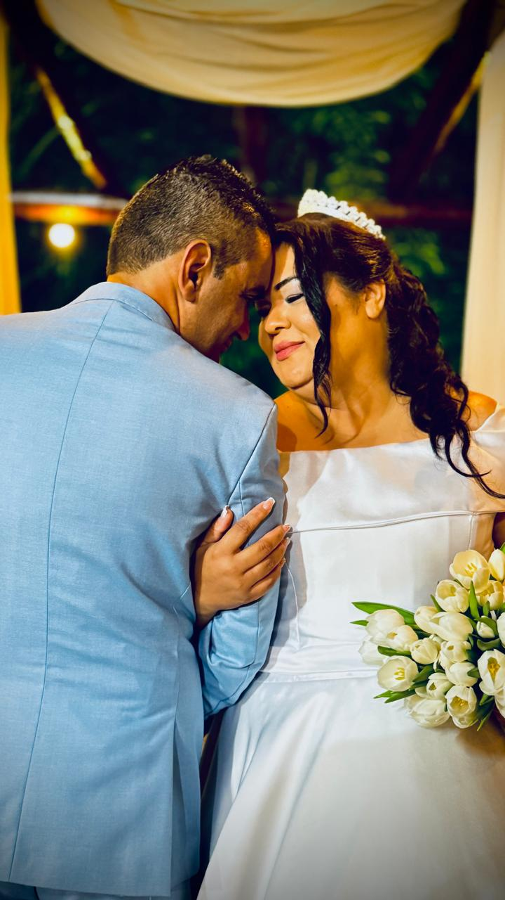
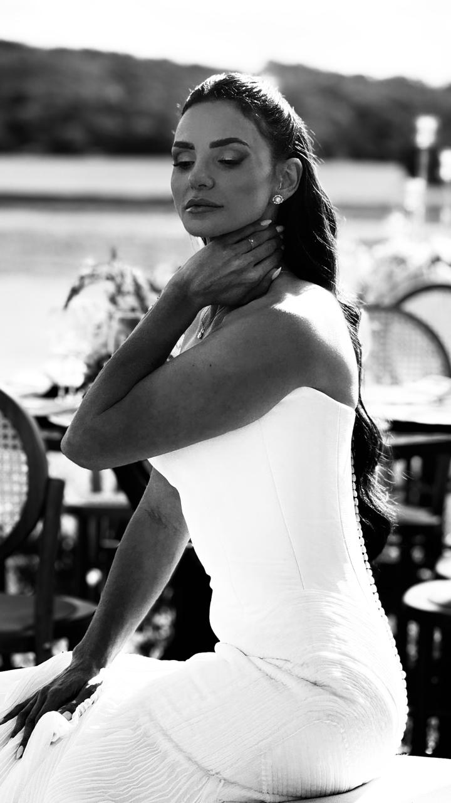
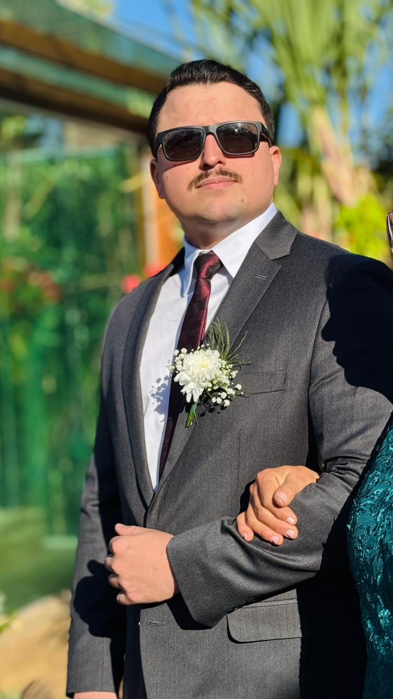
Cada olhar conta uma parte da história.
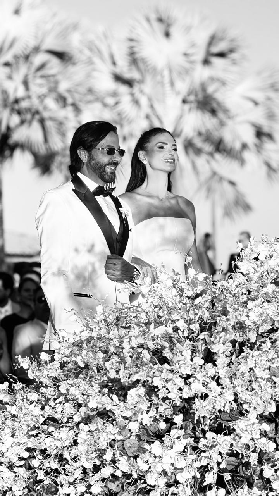
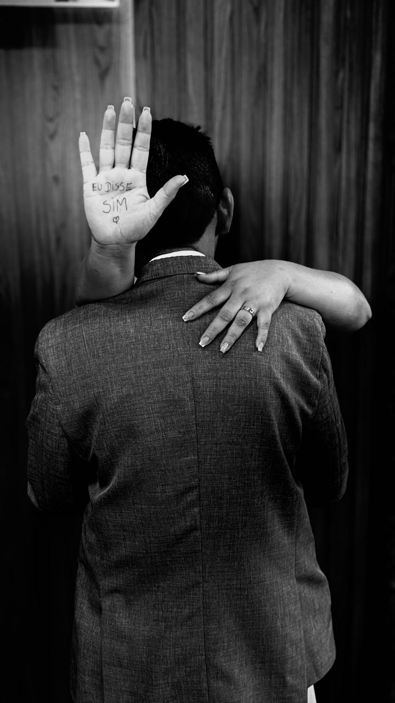
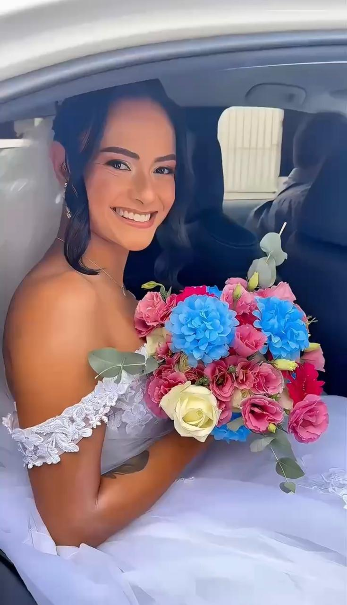
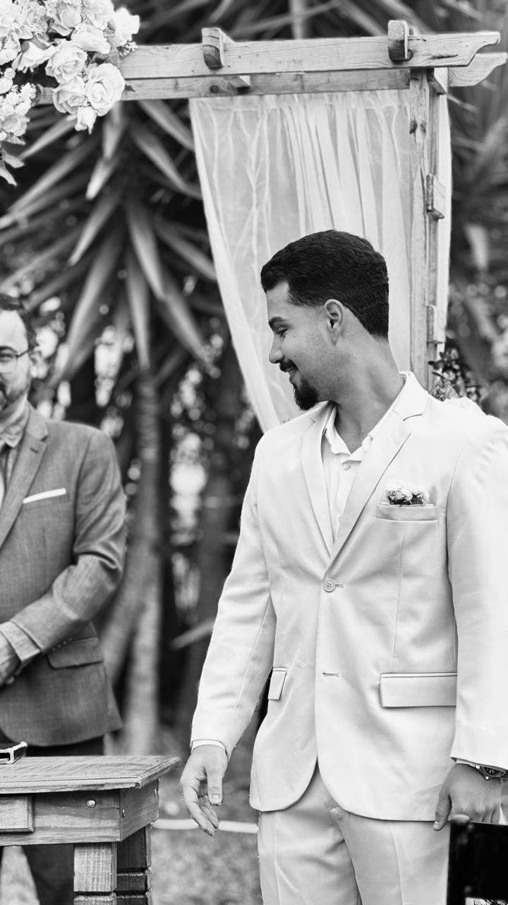
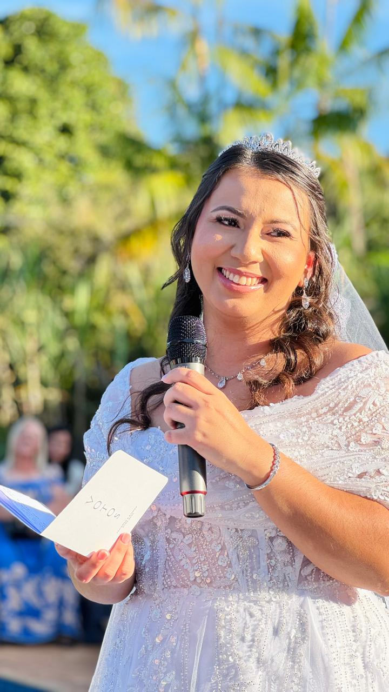
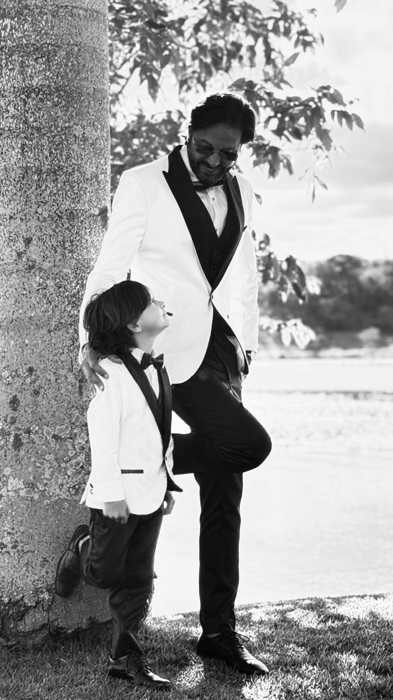
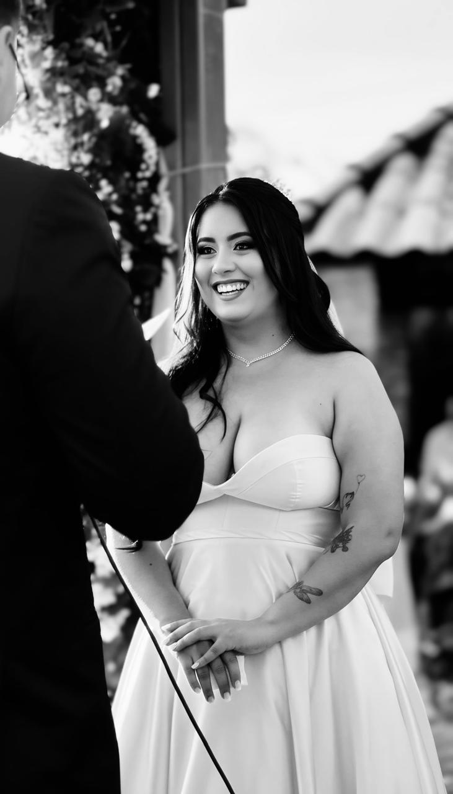
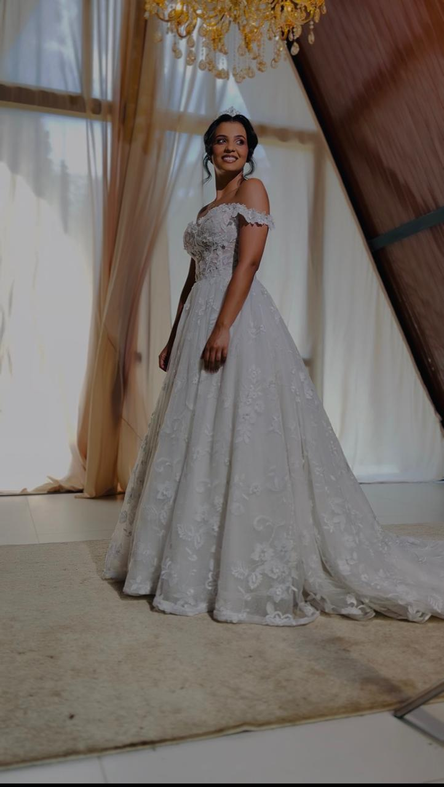
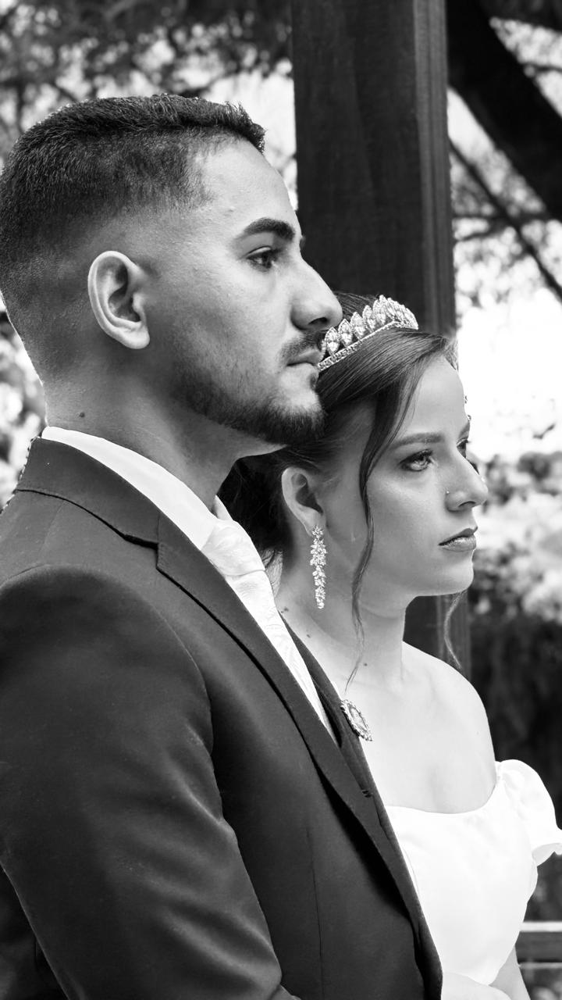
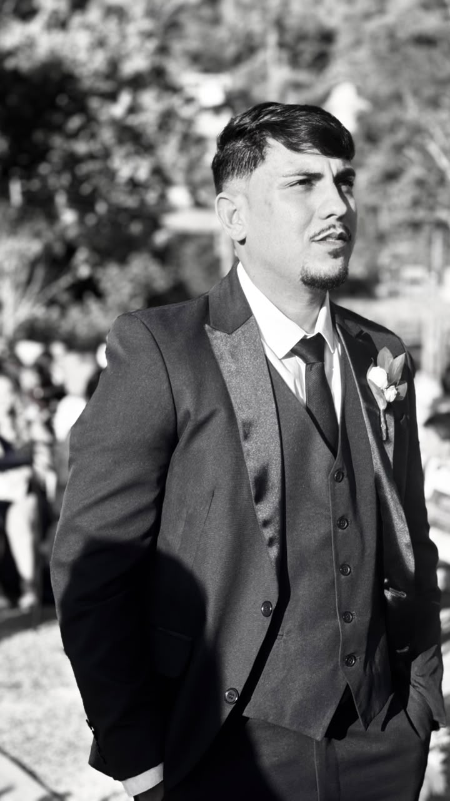
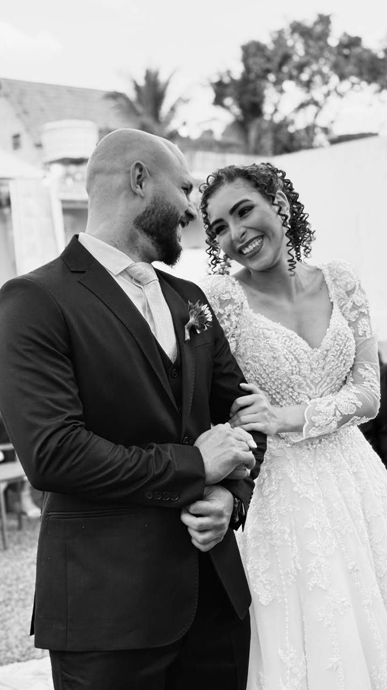
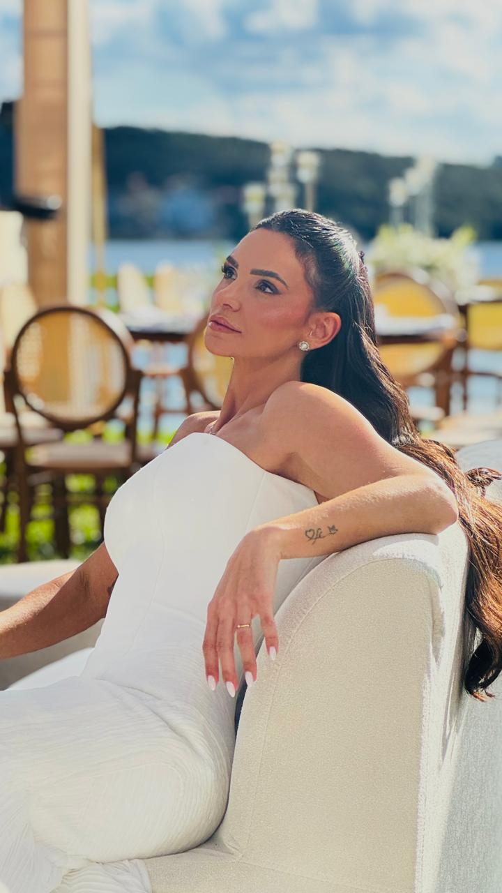
Pacotes e investimento
Três formatos de cobertura para acompanhar o seu evento do jeito que ele merece. Todos incluem vídeos verticais para redes sociais.
Seu momento, nosso olhar.
R$650
Cerimônia + Recepção
Até 5 horas de cobertura
Cobertura completa para acompanhar toda a experiência.
R$990
Making of + Cerimônia + Recepção
Até 8 horas de cobertura
Cobertura premium para viver e compartilhar em tempo real.
R$1.490
Making of + Cerimônia + Recepção + Conteúdo em tempo real
Até 8 horas de cobertura
Drone 4K incluído
Solicitar informaçõesQuer tirar alguma dúvida ou verificar a disponibilidade da sua data? Fale comigo pelo WhatsApp.
Por que a Layon Films
Ao contratar a Layon Films, você conta com sensibilidade para perceber o momento certo, técnica para captar cada cena com qualidade e cuidado para transformar tudo em uma narrativa que emociona.
Com a entrega rápida, você recebe os vídeos pouco tempo depois do evento e pode compartilhar com família e amigos enquanto todos ainda comentam cada detalhe. Vídeos curtos são práticos, dinâmicos e fáceis de enviar para quem você ama.
Cada evento é único e cada detalhe importa.
Seu conteúdo pronto em até 24 horas.
Imagens modernas, estáveis e impactantes.
Registramos sem atrapalhar, para você viver o momento.
A experiência
Você me chama pelo WhatsApp ou pelo Instagram e conta um pouco sobre o seu evento.
Conversamos sobre a data, o local, o estilo da celebração e o que é mais importante para você.
Você escolhe entre Essencial, Completo e Experience, de acordo com a cobertura que deseja.
Alinhamos os momentos principais, os horários e os detalhes que não podem ficar de fora.
No grande dia, estou presente de forma leve e discreta, para você viver cada instante sem preocupação.
Os vídeos são editados com cuidado e entregues com agilidade, conforme o pacote contratado.
Vamos conversar
Alguns momentos passam em segundos. As emoções que eles despertam merecem permanecer.